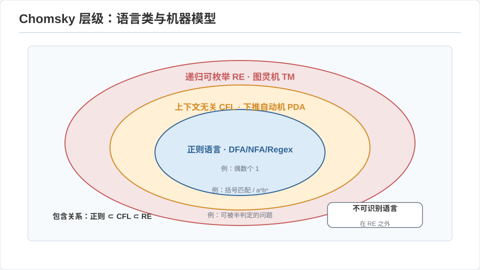
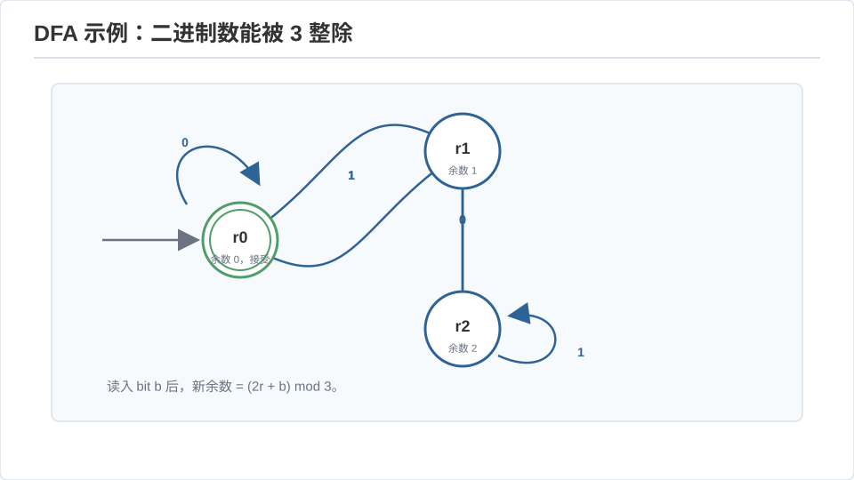
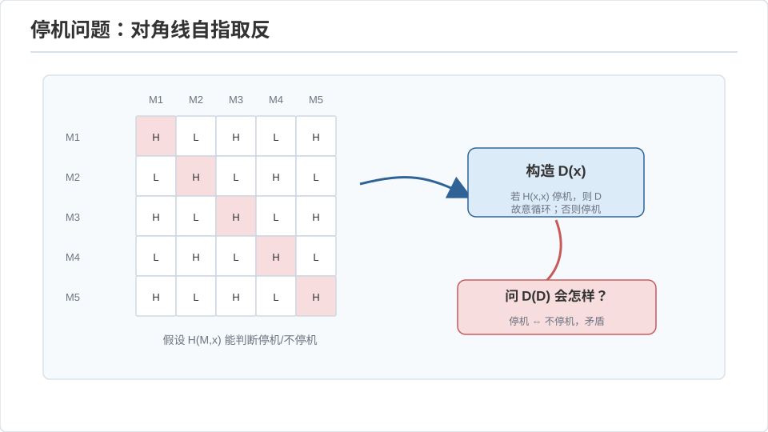

计算理论 I · 自动机与可计算性
对标：Sipser Introduction to the Theory of Computation 第 1–5 章 ｜ 前置：数学站集合论/离散、逻辑 计算理论问的是最根本的问题：什么是"计算"？有没有机器造不出的答案？ 这一页从最弱的机器（有限自动机）拾级而上到图灵机，最后证明有些问题任何计算机都解不了（停机问题）——不是"现在解不了"，是逻辑上不可能。对数学出身的你，这一页是"可计算性 = 一种新的对角线论证"。
1. 自动机层级：机器的算力阶梯
计算模型按"记忆能力"分层，每层对应一类语言（Chomsky 层级）：
| 机器 | 记忆 | 识别的语言 | 典型例子 | 局限（泵引理证不能） |
|---|---|---|---|---|
| 有限自动机 DFA/NFA | 有限状态 | 正则语言 | a*b*、能被 3 整除的二进制数 |
数不了：\(a^nb^n\) 不可识别 |
| 下推自动机 PDA | 状态 + 一个栈 | 上下文无关（CFL） | 括号匹配、\(a^nb^n\) | 数不了两样：\(a^nb^nc^n\) 不可 |
| 图灵机 TM | 无限纸带 | 递归可枚举 | 任何算法 | 停机问题不可判定 |

DFA = NFA（子集构造：NFA 的状态集合当 DFA 的状态，可能指数膨胀但等价）——"不确定性在有限自动机层不增加算力"，一个漂亮的等价定理。正则语言还等价于正则表达式（Kleene 定理）——你每天用的 grep/正则就是在跑一个 DFA（编译前端 comp-01 的词法分析器正是把正则转成 DFA）。

泵引理（证明"不可识别"的工具）【推导思路】：若语言正则，则足够长的串 \(w\) 必可写成 \(xyz\)，其中 \(y\) 非空且 \(xy^iz\) 全在语言里（因为长串必让 DFA 状态重复、形成可重复的环）。反证 \(a^nb^n\) 非正则：泵 \(y\)（落在 \(a\) 段）会破坏 \(a,b\) 数目相等 ⇒ 矛盾。"状态有限 ⇒ 长串必重复状态 ⇒ 可泵"是鸽笼原理的算力版。
2. 图灵机：计算的终极定义
图灵机：有限状态控制 + 无限纸带 + 读写头。极简，却是计算的完整定义。
Church–Turing 论题：一切"可有效计算"的函数都是图灵可计算的。这不是定理（"可有效计算"是直觉概念），而是被大量证据支持的信念——λ 演算（🔗 pl-01）、递归函数、寄存器机、你的笔记本电脑，算力全都恰好等于图灵机。"所有合理的计算模型等价"是计算机科学的哥白尼原理：算力有一个绝对上限，与实现无关。
通用图灵机（UTM）：存在一台 TM 能模拟任何 TM（输入 = 被模拟机的编码 + 其输入）。这就是"存储程序计算机"的理论蓝图——程序即数据、一台机器跑任意程序。冯·诺依曼架构（csapp 线）是它的物理实现。
3. 不可判定性：造不出的答案
判定问题：答案是/否的问题。可判定 = 有 TM 对所有输入都停机并给出正确答案。核心震撼结果：
停机问题不可判定【完整对角线证明】：问"给定程序 \(P\) 和输入 \(x\)，\(P(x)\) 会停机吗？"假设有判定器 \(H(P,x)\) 恒能答。构造捣蛋鬼
问 \(D(D)\)：若 \(D(D)\) 停机，则 \(H(D,D)\)="停机"，按定义 \(D(D)\) 死循环——矛盾；若 \(D(D)\) 死循环，则 \(H(D,D)\)="不停"，按定义 \(D(D)\) 停机——矛盾。故 \(H\) 不存在。\(\blacksquare\)

这是康托尔对角线论证的计算版（🔗 你在数学分析/集合论见过它证实数不可数）：自指 + 取反制造矛盾。停机问题不可解不是工程限制，是逻辑铁律。
Rice 定理（把不可判定推广开）：程序的任何非平凡语义性质都不可判定——"这程序会不会输出 42""两程序是否等价""这段代码有没有 bug（某类）"统统不可判定。这是为什么完美的静态分析器 / 杀毒软件 / 编译器优化器不存在：不是没人聪明到写出来，是数学禁止。工程上只能做"保守近似"（宁可误报，见 sec-01 的静态分析、comp 线的类型检查）。
4. 可判定 vs 可枚举
- 可判定（递归）：能停机答是/否。
- 可枚举（递归可枚举 RE）：能枚举出所有"是"的实例，但"否"可能永不停机（如停机问题本身是 RE 但非可判定——你能确认停机，无法确认不停）。
- \(L\) 与 \(\bar L\) 都 RE ⟺ \(L\) 可判定——这个对称性是很多归约证明的支点。
归约（不可判定性的传播）：把停机问题归约到新问题 \(B\)——若 \(B\) 可判定则停机可判定，矛盾 ⇒ \(B\) 不可判定。和 NP 归约同一手法，只是这里传播的是"不可判定"而非"难"（toc-02 讲"难"）。
5. 练习与要点
例 1（泵引理练手） 证 \(\{a^p : p\text{ 素数}\}\) 非正则：泵出的串长度成等差数列，必含合数——素数的稀疏性击穿有限状态。
例 2（Rice 的日常影子） "编译器能否判断我的循环一定会终止？"——不能（停机的特例）。所以 Rust/类型系统只能证某些终止（结构递归），通用终止性检查不存在。理解这一点你就不会再期待"完美的 linter"。
例 3（自指的威力） quine（打印自身源码的程序）存在——由递归定理保证。它和停机证明里的 \(D(D)\)、哥德尔不完备的自指是同一个数学现象的三个面孔。自指是计算理论的暗线主角。\(\blacksquare\)
下一页：计算理论 II——从"能不能算"到"要算多久"：复杂度类、P vs NP 的结构，与空间/随机/交互的层级。